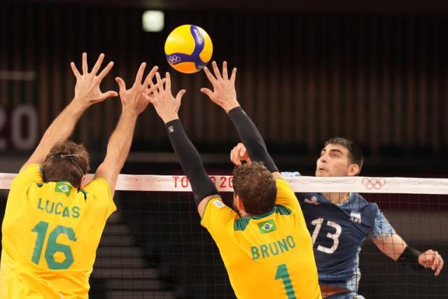

VOLEY
El voleibol es jugado por dos equipos que intentan mandar el balón al otro lado de la red con la intención de que toque el suelo de la mitad de la cancha del oponente, mientras buscan evitar que el rival lo consiga. Para ganar el partido, un equipo debe lograr conquistar tres sets, los cuales son a 25 puntos cada uno, y debe hacerlo con una ventaja mínima de dos tantos. Cuando este está empatado a dos sets, el set final se disputa a 15 puntos.
Reglamento
Sistema de puntos
Si el balón toca el suelo de un lado de la cancha, el equipo situado del lado contrario se llevará un punto a su favor.
Si el balón, una vez en juego, toca el suelo por fuera del área delimitada de la cancha de voleibol se llevará un punto el equipo contrario al grupo del cual es integrante quien haya tocado por última vez el balón.
Posciones de juego
Las posiciones en el voleibol son fundamentales a la hora de distribuir el juego, ya que determinan el papel que tiene cada jugador dentro de la cancha. Cada jugador, tiene asignada una tarea y una función específica durante el partido dependiendo de la posición que ocupe dentro de la cancha. Las posiciones en el voleibol incluyen colocador, central, puntero, opuesto y libero.
La posición de colocador en el voleibol es una pieza fundamental en cuanto a la estrategia ofensiva y a la distribución del juego del equipo. Normalmente una de las funciones principales del colocador es ser el encargado de realizar el segundo toque del balón y de pasar el balón hacia los rematadores para que realicen el ataque.
El rematador externo es el jugador de voleibol que golpea y bloquea en el lado frontal izquierdo de la cancha. La posición de rematador exterior en el voleibol la suele ocupar un gran jugador versátil. Además, generalmente es la posición de ataque principal. No solo necesita grandes habilidades de coordinación e inteligencia, sino que también necesita ser un gran rematador y bloqueador para cumplir con sus funciones dentro de la cancha.
El opuesto es el jugador que realiza la mayor parte de los remates del equipo. Cuando se encuentra en la zona delantera de la red se ubica en la posición 2 y cuando está en la zona de zaguero en la posición 1, siempre en la posición contraria al colocador.
El jugador que ocupa la posición de central en el voleibol es el dueño del centro de la red y la principal baza de bloqueo del equipo. Entre sus funciones, está que a menudo remata justo al lado del colocador con una bola rápida para tener a la defensa desprevenida.
El líbero es el especialista defensivo del equipo. El jugador que ocupa la posición de líbero en voleibol lleva la camiseta de otro color y solo juega en la zona de atrás. No puede atacar ni bloquear, por lo que la altura no es un requisito fundamental para jugar en este puesto.
Los cambios del líbero no cuentan en el computo total de cambios permitidos del equipo. Podrá cambiarse con un jugador tantas veces como quiera siempre y cuando vuelva a ser sustituido por el mismo jugador. Además, el líbero no participa en las rotaciones del equipo que hay en pista.